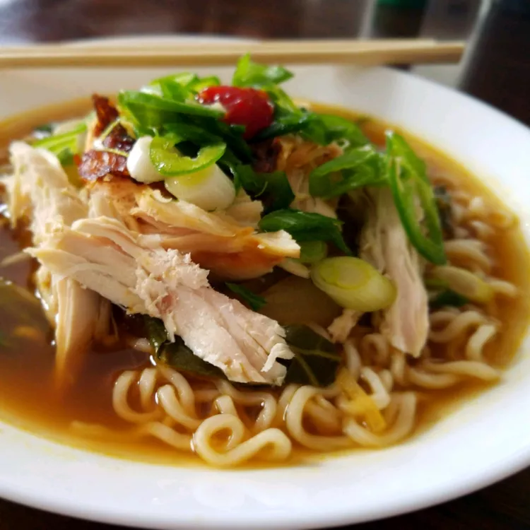

Chicken Ramen Recipe

Chicken Ramen
Ingredients
- medium onion
- 3 cloves garlic, minced
- 1 tablespoon freshly grated ginger
- ½ cup rice vinegar, or to taste
- ½ cup reduced-sodium soy sauce
- 4 cups low-sodium chicken broth
- 1 cooked chicken breasts, shredded
- 3 (3 ounce) packages dried ramen noodles
Steps
- Heat a Dutch oven over medium-high heat. Add onion and saute until starting
to soften, about 5 minutes. Add garlic and ginger; cook about 30 seconds more. Add rice vinegar, soy sauce,
oyster sauce, mirin, fish sauce, and sriracha sauce; stir to combine. Add chicken broth and water and bring
to a boil. Reduce heat and simmer about 5 minutes. Add chicken and bok choy; simmer gently until bok choy is
just tender, about 2 minutes.
- Fill a large pot with lightly salted water and bring to a rolling boil. Add ramen noodles and return to a
boil. Cook, uncovered, stirring occasionally, until noodles are tender yet firm to the bite, 5 to 7 minutes.
Drain and drizzle with vegetable oil to prevent sticking.
- While ramen is cooking, fill a pot with enough water to cover the eggs and bring to a boil. Gently lower
eggs into the boiling water and cook until yolks are barely set, about 7 minutes.
- Fill a large bowl with ice water. Transfer soft boiled eggs to the ice bath to stop the cooking process; let
sit about 3 minutes. Drain eggs, carefully peel away shells, and slice in half.
- Divide ramen between 4 bowls. Add broth. Top each with jalapeno, green onions, cilantro, and soft boiled
egg. Serve immediately.